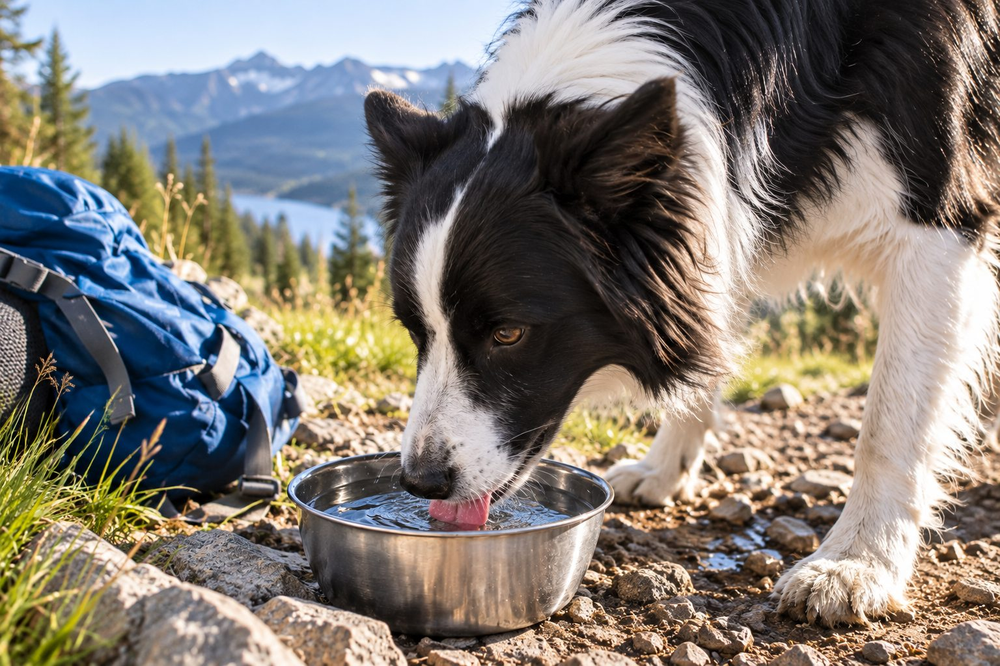

There is no single daily amount for every dog. Keep clean water available and contact a veterinarian about a sustained increase or decrease in drinking.
A dog's water use changes from day to day. A long walk, warm weather, dry food, or nursing puppies can increase thirst. What matters most is knowing your dog's usual pattern and recognizing when it changes unexpectedly.
Factors that affect drinking
Body size, activity, temperature, diet, and health all influence water needs. Wet food adds water through meals; dry food does not. A dog may also drink more after exercise or a salty treat.
These factors explain some variation, but they do not rule out illness. Track a change rather than dismissing it because the weather is warm.
A single universal number does not describe every dog's needs. Body size, food moisture, exercise, temperature, age, and health can alter how much water a dog drinks. Instead of treating a chart as a diagnosis, establish a baseline during several ordinary days. Fill the same clean bowl with a known amount and note what remains after a set period. Record hot weather, long walks, wet food, and any spilled water. Shared bowls make individual estimates less reliable, so observe who drinks or ask the veterinarian how to measure one dog's intake.
Keep water available during observation. Do not restrict access to obtain a cleaner number. A trend that is clearly different from your dog's usual pattern is worth discussing even if you cannot calculate an exact volume. The veterinarian can interpret the estimate alongside urination and other signs.
How to observe intake
Offer fresh water in a clean bowl. If you need a clearer picture, measure how much you pour in and what remains after 24 hours, accounting for spills and other pets. Note urination frequency and any change in appetite or energy.
Share the record with your veterinarian. Do not limit access to water to test a theory; dehydration can develop quickly.
Activity can change a day's drinking. A dog may seek water after a warm walk or vigorous play; a dog eating wet food may drink less from the bowl because some moisture comes from meals. These ordinary influences are useful context, not a reason to ignore an extreme or persistent change. Record when the dog drinks, whether it empties the bowl unusually fast, and whether urination has changed. Look at the whole pattern over several days rather than one hot afternoon.
Provide fresh water in a stable, accessible bowl. Take water on long outings and offer breaks without forcing a dog to gulp a very large amount at once. If a dog has difficulty reaching a bowl because of age or mobility, move it to a comfortable place. Clean the bowl regularly so odor or residue does not discourage drinking.

Signs that deserve a call
A noticeable, persistent rise in drinking, much larger urine volumes, difficulty urinating, repeated vomiting, or low energy warrants advice. Decreased drinking along with illness is also concerning. Your veterinarian can determine whether testing is needed.
Seek urgent care if your dog collapses, cannot keep water down, appears severely weak, or has signs of heatstroke. Move to a cooler place and call a clinic while following professional instructions.
Call a veterinarian if your dog suddenly drinks much more or much less, especially with increased urination, accidents, weight change, vomiting, reduced appetite, or weakness. Some medications and medical conditions affect thirst, so bring a list of everything the dog receives. Do not change prescribed drugs because of one observation; call the prescriber. A dog that cannot keep water down, seems collapsed, or has trouble urinating needs urgent advice. The combination of signs matters more than whether an online water formula was exceeded.
Use plain descriptions when calling: how much was offered, approximately how much disappeared, and over what time. Mention other pets that share the bowl and any uncertainty about spills. Honest estimates are more useful than falsely precise numbers. The clinic can decide which tests or examination are appropriate.
A simple drinking record
| Write down | Why it matters |
|---|---|
| Starting water and every refill | Provides an approximate daily amount. |
| Water remaining, spills, and shared-bowl use | Shows where the estimate may be uncertain. |
| Heat, exercise, food type, and urination | Adds context for a veterinary conversation. |
Keep water freely available while observing; never restrict it to make the record easier.
Make water easy to use
Refresh bowls daily, carry water on long outings, and offer breaks during exercise. Clean travel containers after use. If your dog is reluctant to drink, discuss it with a veterinarian rather than relying on flavored additives.
A measurement routine should not make the dog uncomfortable. Keep the usual bowl in its normal place if possible. Refill whenever needed and add each refill to the day's total. At the end of the period, subtract what remains, allowing for obvious spills. Repeat on a few normal days. If your dog uses several bowls, measure all of them or explain that the estimate is incomplete. A record of dates and conditions makes the information interpretable.
Include the food type. A switch from dry to wet meals can alter how much water is taken from a bowl, while an unusually salty treat may temporarily change thirst. Do not give salty food to test this. Keep meals stable during the observation period unless your veterinarian advises otherwise. The aim is to see what the dog normally does, then recognize a real deviation.
Practical details
Why a fixed number is incomplete
Dogs differ in size, diet, activity, temperature exposure, and health. A dog eating moist food receives some water in meals; a dog eating dry food relies more on drinking. A hot walk may bring a temporary increase. Those explanations are useful context, but they do not let you dismiss a marked change that lasts beyond the situation.
A general chart cannot account for all these factors or for a dog's medical history. Instead, know the dog's usual pattern. Is the bowl empty sooner, are there more bathroom trips, or is the dog waking to drink at night? These observations help a veterinarian decide whether the amount is unusual for that dog.
Track a change without restricting water
Fill a clean bowl with a measured amount and note who can access it.
Offer breaks and water on warm or active days; note spills and refills.
Measure what remains and compare with the dog's normal pattern.
Record urination, appetite, and energy and contact your veterinarian.
Measure thoughtfully for a short period
If you suspect a change, measure the amount poured into a clean bowl and what remains after 24 hours. Account for spills, evaporation, and other pets using the same bowl. Note food type, exercise, heat, and any medication changes. Never limit water to see whether the dog stops drinking so much; restriction can be dangerous and does not answer why thirst increased.
Urination matters too. Larger volumes, accidents in a previously house-trained dog, or straining can change the urgency of a call. A veterinarian may ask for a urine sample or recommend tests after reviewing the history. Bring notes rather than a rough guess like 'a lot lately.'
Consider two dogs of similar size. One hikes on a warm day and drinks more after returning; the other has spent a cool day indoors but begins refilling its bowl repeatedly and urinating much more. Their different contexts change the meaning of the observation. If the first dog is otherwise comfortable and the change ends, a short-term rise may be expected. The second pattern deserves a veterinary call. Neither situation can be judged by a number alone.
When more than one person cares for the dog, agree on a single record. A note on the refrigerator or phone can capture refills without relying on memory. If the dog visits another home or daycare, ask whether drinking and bathroom breaks were unusual there too. These details help distinguish a household measurement error from a broader pattern.
Keeping hydration simple
Refresh bowls daily, clean travel bottles, and carry water on long outings. Offer rest in shade on hot days. Do not rely on flavored additives or human sports drinks to solve a dog refusing water. If a dog seems weak, vomits repeatedly, or cannot keep water down, seek veterinary advice promptly.
If a dog drinks far less than usual, consider whether it is eating normally and acting alert. Pain, illness, or an inaccessible bowl may play a role. The best response is a fresh, reachable water source and a professional assessment when the pattern is sustained or accompanied by other signs. The goal is to notice meaningful change, not to hit an arbitrary quota.
After a veterinary visit, ask what changes should prompt follow-up. If monitoring is recommended, clarify whether the clinic wants approximate daily intake, urine observations, weight, or a combination. Keep the method consistent so changes are meaningful. Do not assume that a return to the usual bowl use proves that an underlying issue has resolved if other symptoms continue. Report the full picture and follow any prescribed plan.
Water is a basic need. The safe message is to provide clean access, notice a clear change, and seek professional interpretation when the pattern is persistent or accompanied by other signs. A rough home baseline is valuable because it helps you describe what changed; it is not a test that can replace an examination.
A simple table of refills can prevent vague impressions. Write the starting amount, every refill, the amount left, and notable events such as a long walk or a bowl tipped over. Keep access to water normal while you do this. If two dogs share a bowl, acknowledge that the total cannot be assigned accurately to one animal. The veterinarian may suggest a better way to observe the individual dog. Do not separate pets in a way that causes distress solely to obtain a number.
The same observation should include urination. A dog that drinks much more and asks to go outside more often is different from one that splashes water while playing. New accidents, straining, or inability to urinate require prompt advice. Take the record and medication list to the clinic rather than trying to fix thirst by limiting water. The purpose of measurement is to support a safer medical conversation.
Make a drinking baseline for your dog
Use the same bowl and note how much water you add over a few ordinary days. Record exercise, heat, and whether the dog eats wet or dry food. In a home with several pets, a shared bowl will not give a reliable individual measure, so watch who drinks and consider separate access during observation. The baseline makes a meaningful increase or decrease easier to recognize.
Provide clean water at all times. Refill the bowl after walks and check that an older or less mobile dog can reach it easily. A dog that suddenly drinks much more, drinks much less, or urinates differently should be discussed with a veterinarian. Do not restrict water to test whether the pattern stops. A change paired with vomiting, weakness, or trouble urinating calls for more urgent advice.
Clean bowls regularly and note if a new bowl, fountain, or location changes drinking behavior. If you contact a clinic, bring the approximate amounts and dates along with the dog's food, medications, and activity changes. A measured trend is more useful than trying to judge one unusually thirsty afternoon.
Notice whether your dog seeks unusual water sources such as a toilet, puddle, or dripping tap, because the bowl alone may undercount intake. Check that every caregiver refills the bowl consistently. If drinking changes along with appetite or energy, mention both patterns when you call the clinic.
Continue exploring
For a broader routine, read Can Dogs Eat Bananas? What Pet Owners Should Know, Can Cats Eat Cooked Chicken?, and How to Switch Dog Food Gradually and Safely.
Frequently Asked Questions
Should I measure my dog's water every day?
Usually no, but measuring for a short period can help clarify a suspected change.
Can hot weather make dogs drink more?
Yes, but marked or persistent changes still deserve attention.
Is too much water possible?
Excessive drinking can be a sign of a health problem; ask a veterinarian to assess it.
Editorial references
These resources informed the general guidance in this article. They do not replace advice tailored to your pet.
This guide offers general information. Your pet’s age, health, and history may call for a different plan. For medical concerns, ask your veterinarian.